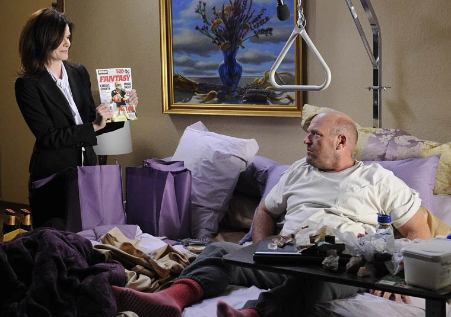
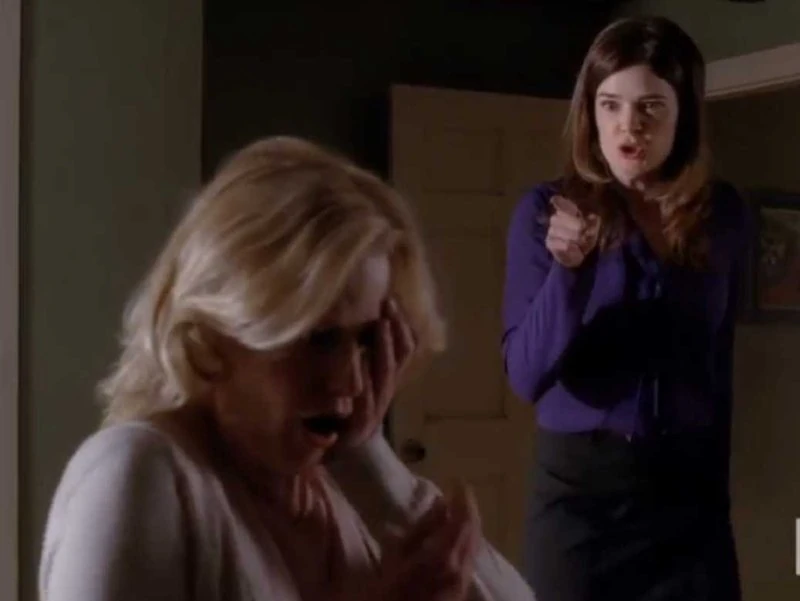
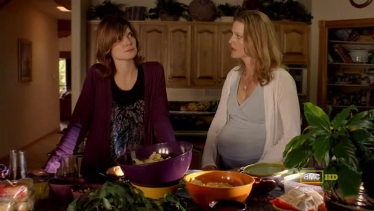

Hank Schrader
Marie Schrader, interpretada por Betsy Brandt, es la hermana de Skyler White y la esposa de Hank Schrader en *Breaking Bad*. A lo largo de la serie, Marie se convierte en un personaje fundamental, no solo por su relación con su esposo y su hermana, sino también por su propia lucha personal y las consecuencias que la vida criminal de Walter White tiene en su vida familiar. Marie es un personaje complejo que, aunque al principio parece desempeñar un papel secundario, evoluciona y revela una profundidad emocional única.
Personalidad y Problemas PersonalesMarie es extrovertida, decidida y a veces impulsiva. Aunque está genuinamente dedicada a su familia, Marie presenta ciertos problemas de comportamiento. Desde el inicio de la serie, muestra una tendencia compulsiva hacia el robo de pequeños objetos en tiendas, a pesar de que no lo necesita económicamente. Este comportamiento se interpreta como una forma de escapar de las frustraciones y tensiones emocionales que enfrenta en su vida personal, así como un intento inconsciente de encontrar control en su vida. Su hábito de robar pone en tensión su relación con su hermana Skyler, quien en varias ocasiones se ve obligada a intervenir para evitar que las acciones de Marie tengan repercusiones legales. Aunque Skyler intenta ayudarla, Marie niega su problema y evita hablar del tema. Esta relación ambigua con su hermana marca su personalidad y muestra las vulnerabilidades detrás de su fachada segura y enérgica.
 Relación con Hank y el Trauma de su HeridaMarie está profundamente enamorada de Hank y se muestra como un apoyo incondicional para él. Su relación, aunque a veces complicada por las diferencias de personalidad y las tensiones del trabajo de Hank en la DEA, es una de las más estables en la serie. Cuando Hank es gravemente herido tras un ataque de los primos Salamanca, Marie se convierte en su cuidadora principal durante su recuperación. Este período es especialmente difícil para Marie, quien tiene que lidiar con la frustración, el dolor y la vulnerabilidad de Hank. El ataque no solo cambia la vida de Hank, sino que también marca un punto de inflexión en la vida de Marie, quien debe enfrentar el sufrimiento de su esposo y su lenta y dolorosa recuperación. La paciencia y dedicación que muestra durante este tiempo revelan su fuerza y resiliencia, ya que nunca abandona a Hank y lo apoya en su proceso de recuperación física y emocional, a pesar de que él a veces la trata con dureza.
 El Descubrimiento de Heisenberg y su Impacto en MarieLa vida de Marie da un giro dramático cuando Hank descubre que el narcotraficante que ha estado buscando, "Heisenberg," es en realidad Walter White, el esposo de su hermana Skyler. Esta revelación tiene un efecto devastador en Marie, quien siente una profunda traición y repulsión hacia Walter y Skyler. No solo descubre que su cuñado es un criminal, sino que también se entera de que su hermana ha estado encubriendo sus actividades. La ira de Marie es intensa, especialmente dirigida hacia Skyler, a quien culpa por poner en riesgo la vida de Hank y la seguridad de su familia. Su relación con Skyler se vuelve extremadamente tensa y difícil de reparar. Marie, quien siempre fue leal a su familia, se encuentra en una posición donde sus lazos familiares están en conflicto directo con su sentido de justicia y lealtad hacia Hank.
 Lucha por la Justicia y el Conflicto MoralA partir de la revelación, Marie se convierte en una aliada fundamental de Hank en su intento de llevar a Walter ante la justicia. A pesar de las repercusiones que esto podría tener en su relación con Skyler, Marie apoya completamente a Hank, y juntos intentan exponer las actividades de Walter. Marie muestra una fuerza moral notable y se convierte en una figura de apoyo para Hank, quien, después de la revelación, enfrenta la presión de capturar a su propio cuñado. Marie se encuentra en una lucha emocional al verse dividida entre su amor por su hermana y su lealtad hacia Hank. Esta situación la pone en un dilema emocional que la desgasta, ya que, aunque siente amor por Skyler, la decepción y la rabia que siente son demasiado grandes como para perdonar fácilmente.
 Consecuencias y Pérdida de Hank
Consecuencias y Pérdida de Hank
La tragedia de Marie alcanza su punto máximo cuando Hank es asesinado por una banda de neonazis liderada por Jack Welker, uno de los aliados de Walter. La pérdida de Hank es devastadora para Marie, quien pierde a la persona más importante de su vida y queda sumida en un profundo dolor. Walter le había prometido que Hank estaría a salvo, lo que convierte su muerte en un acto de traición aún mayor. Tras la muerte de Hank, Marie debe enfrentar la realidad de una vida sin su esposo, a quien apoyó incondicionalmente hasta el final. La relación entre Marie y Skyler queda completamente destruida, y Marie se convierte en una figura solitaria, llena de resentimiento hacia Walter y el mundo criminal que le arrebató a su esposo. Su vida, que alguna vez estuvo marcada por sus problemas menores y su comportamiento excéntrico, queda marcada por la tragedia y el dolor de perder a Hank.
El Legado de Marie SchraderMarie Schrader es un personaje que evoluciona significativamente a lo largo de la serie. Pasa de ser una mujer excéntrica y algo superficial a una figura trágica y resiliente que debe enfrentar la pérdida y el dolor causados por las acciones de aquellos a quienes más amaba. Su historia es la de una mujer atrapada en un mundo de crimen y corrupción al que nunca eligió pertenecer, pero que la afecta de manera irreversible. El legado de Marie en *Breaking Bad* es el de una mujer fuerte, que aunque imperfecta, muestra una lealtad y amor profundo hacia su esposo. Su carácter extrovertido y su fortaleza emocional contrastan con su lado vulnerable, y su historia representa el impacto devastador que la codicia y el crimen pueden tener en las vidas de personas inocentes.